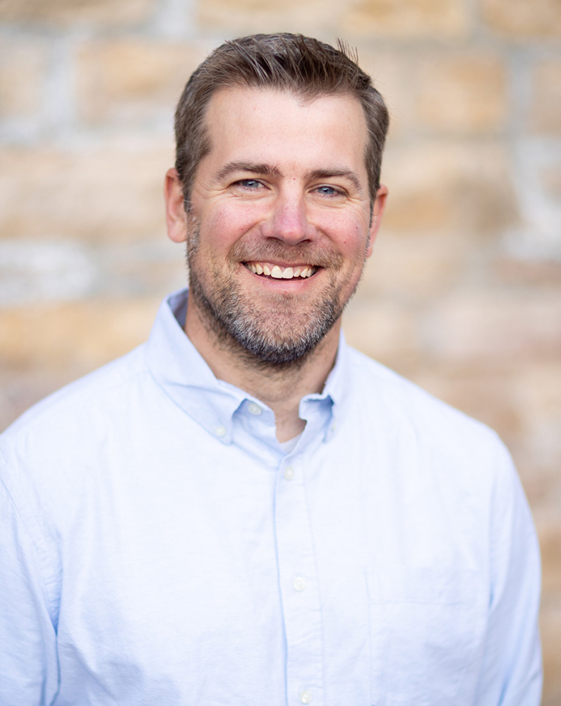

Todd Kirk - Founder & Lead Interviewer
Recordtale began as Todd’s vision - a belief that stories are most powerful when they’re captured in the moment, not reconstructed years later.
With a natural gift for conversation and a deep respect for personal history, Todd leads every interview with warmth, curiosity, and intention. Todd does more than just ask questions - He creates a space where stories surface naturally and honestly.
"Todd quote goes here."